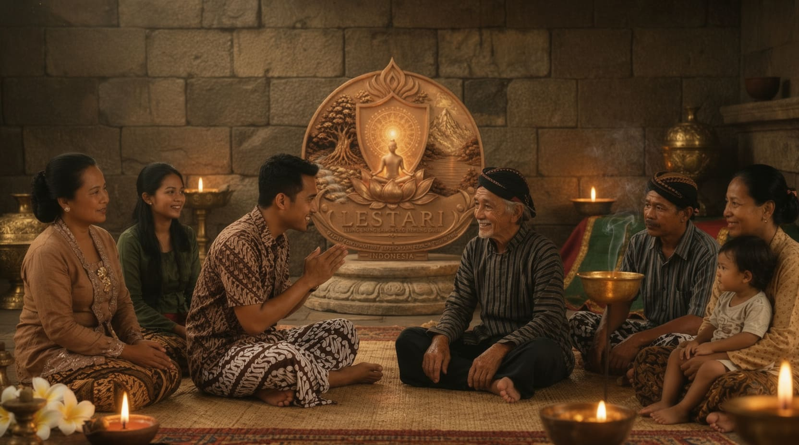

NAWA TATANANING PANGURIPAN JANMA MANUSA

Pengertian Nawa Tatananing Panguripan Janma Manusa.
Nawa Tatananing Panguripan Janma Manusa adalah sembilan tatanan dasar kehidupan manusia yang menjelaskan keselarasan antara raga, cipta, rasa, karsa, tindakan, hubungan antarmanusia, alam, kawruh, dan kasunyatan. Dalam Kawruh Uttamopadesa, kesembilan tatanan ini merupakan landasan untuk memahami kehidupan dan mewujudkan pemahaman tersebut melalui laku nyata.
Tatanan kehidupan bukan sekadar aturan yang dibuat manusia untuk mengatur perilakunya. Tatanan merupakan pemahaman mengenai hubungan berbagai unsur kehidupan yang perlu dijaga agar manusia dapat menjalani kehidupan secara selaras, bijaksana, dan bermanfaat.
Manusia memiliki kemampuan untuk memahami keadaan dirinya, mempertimbangkan tindakan, merasakan keadaan sesama, menentukan tujuan, serta memilih jalan kehidupan. Kemampuan tersebut perlu diarahkan pada kebaikan agar kehidupan tidak dikuasai oleh keinginan pribadi, keserakahan, kesombongan, dan tindakan yang merugikan pihak lain.
Menurut Kawruh Uttamopadesa, keselarasan tumbuh melalui pemurnian cipta, ketulusan rasa, keutamaan karsa, dan pelaksanaan tindakan yang sesuai dengan kasunyatan. Oleh karena itu, Nawa Tatananing Panguripan Janma Manusa tidak hanya dipahami sebagai pengetahuan, tetapi juga sebagai pedoman laku kehidupan.
Landasan Pemahaman.
Kehidupan manusia tidak berdiri sendiri. Raga membutuhkan lingkungan yang mendukung kehidupan, manusia membutuhkan sesama dalam menjalankan berbagai tanggung jawab, sedangkan pengetahuan membutuhkan kebijaksanaan agar menghasilkan tindakan yang bermanfaat.
Setiap bagian kehidupan saling berhubungan. Ketidakseimbangan dalam satu bagian dapat memengaruhi bagian lainnya. Keinginan yang tidak terkendali, misalnya, dapat mengaburkan pertimbangan, merusak hubungan sosial, dan mendorong tindakan yang bertentangan dengan kebaikan.
Karena itu, kesembilan tatanan berikut dipahami sebagai satu kesatuan. Tidak ada satu tatanan yang cukup dijalankan secara terpisah tanpa memperhatikan keseluruhan kehidupan.
1. Tatananing Raga: Memelihara Raga sebagai Piranti Kehidupan.
Raga merupakan sarana bagi manusia untuk menjalani kehidupan di dunia. Melalui raga, manusia bekerja, berhubungan dengan sesama, memenuhi tanggung jawab, dan mewujudkan kebaikan dalam tindakan nyata.
Memelihara raga berarti menjaga kesehatan, mengatur pola hidup, memenuhi kebutuhan secara wajar, serta menghindari tindakan yang merusak diri. Raga juga perlu digunakan secara bertanggung jawab, baik melalui perkataan maupun perbuatan.
Dalam Kawruh Uttamopadesa, raga bukanlah jatining dhiri, melainkan piranti untuk melaksanakan laku kehidupan. Oleh sebab itu, pemeliharaan raga tidak hanya berkaitan dengan kesehatan jasmani, tetapi juga dengan penggunaannya untuk menghasilkan manfaat bagi diri sendiri, sesama, dan lingkungan.
2. Tatananing Cipta: Memurnikan dan Menjernihkan Cipta.
Cipta merupakan daya yang memungkinkan manusia mengamati, mengingat, membayangkan, berpikir, mempertimbangkan, membedakan, dan memahami sesuatu.
Cipta yang dipenuhi kesombongan, kebencian, kecemburuan, dan keserakahan dapat mengaburkan pemahaman serta mengarahkan manusia pada tindakan yang keliru. Sebaliknya, cipta yang jernih membantu manusia melihat persoalan secara lebih tepat dan menentukan tindakan dengan bijaksana.
Pemurnian cipta dilakukan melalui mawas diri, memeriksa pertimbangan, serta mengenali dorongan yang memengaruhi keputusan. Tujuannya bukan sekadar menghasilkan pikiran yang tenang, melainkan menumbuhkan pemahaman yang lebih jernih mengenai kehidupan dan akibat dari setiap tindakan.
3. Tatananing Rasa: Menjernihkan Rasa dan Menumbuhkan Ketulusan.
Rasa memungkinkan manusia merasakan keadaan dirinya dan memahami keadaan sesama. Melalui rasa, manusia dapat mengembangkan kasih, kepedulian, belas kasih, tenggang rasa, dan kepekaan terhadap penderitaan orang lain.
Rasa perlu dijernihkan dari kebencian, iri hati, pamrih, dan keinginan untuk merendahkan sesama. Rasa yang tulus tidak menjadikan kebaikan sebagai sarana untuk memperoleh pujian atau balasan, melainkan mendorong tindakan yang bermanfaat karena memahami nilai kebaikan itu sendiri.
Penjernihan rasa diwujudkan melalui kesediaan memaafkan, menghormati sesama, membantu orang yang membutuhkan, dan menjaga sikap dalam pergaulan. Dengan demikian, rasa menjadi landasan bagi tumbuhnya ketulusan dan keselarasan hubungan antarmanusia.
4. Tatananing Karsa: Meluhurkan Kehendak dan Tujuan.
Karsa merupakan daya kehendak yang mengarahkan manusia pada tujuan dan tindakan. Kehendak menentukan apa yang hendak diwujudkan serta usaha yang dilakukan untuk mencapainya.
Karsa yang luhur mengarahkan tujuan pada kebaikan, tanggung jawab, dan kemanfaatan. Sebaliknya, kehendak yang dikuasai keserakahan, kesombongan, atau keinginan menguasai orang lain dapat membawa manusia menjauh dari keselarasan kehidupan.
Meluhurkan karsa berarti menimbang tujuan, memeriksa niat, memilih cara yang baik, dan meneguhkan tekad untuk melaksanakan tindakan yang benar. Kehendak yang utama tidak cukup dinyatakan melalui harapan, tetapi perlu diwujudkan dalam laku yang nyata dan berkelanjutan.
5. Tatananing Lampah: Menyelaraskan Tindakan dengan Kebaikan.
Lampah merupakan perwujudan nyata dari cipta, rasa, dan karsa. Kebaikan seseorang tidak hanya terlihat dari pengetahuan atau perkataannya, tetapi terutama dari tindakan yang dijalankan dalam kehidupan sehari-hari.
Lampah yang selaras diwujudkan melalui kejujuran, ketulusan, tanggung jawab, kepedulian, dan penghormatan terhadap hak sesama. Tindakan yang baik tetap dijalankan meskipun tidak disaksikan atau tidak menghasilkan pujian.
Mawas diri juga menjadi bagian penting dalam tatananing lampah. Ketika menyadari kesalahan, manusia perlu memperbaikinya agar tidak berkembang menjadi kebiasaan. Dengan demikian, kawruh tidak berhenti sebagai pengetahuan, tetapi menghasilkan perubahan nyata dalam kehidupan.
6. Tatananing Sesambetan: Menjaga Kerukunan dengan Sesama.
Manusia menjalani kehidupan melalui hubungan dengan sesama. Karena itu, penghormatan, kejujuran, kepedulian, dan kesediaan bekerja sama merupakan bagian penting dari keselarasan kehidupan.
Menjaga kerukunan bukan berarti semua orang harus memiliki pendapat yang sama. Perbedaan pandangan dapat menjadi kesempatan untuk belajar, memperluas pemahaman, dan menemukan penyelesaian yang lebih bijaksana.
Tatananing sesambetan mengajarkan manusia untuk menghindari permusuhan yang tidak perlu, menjaga perkataan, menghormati martabat orang lain, dan mengutamakan penyelesaian persoalan secara baik. Kerukunan tumbuh ketika setiap orang bersedia menjalankan tanggung jawab dan menghargai keberadaan sesamanya.
7. Tatananing Alam: Menjaga Keselarasan dengan Lingkungan.
Alam merupakan bagian penting dari keberlangsungan kehidupan. Air, tanah, udara, tumbuhan, hewan, dan berbagai unsur lingkungan memiliki peran dalam menopang kehidupan manusia dan makhluk lainnya.
Menjaga keselarasan dengan alam berarti menggunakan sumber daya secara bijaksana, tidak merusak lingkungan demi kepentingan sesaat, mengurangi pencemaran, serta memelihara kelestarian alam bagi generasi berikutnya.
Manusia bukanlah pihak yang dapat menggunakan alam tanpa batas. Kehidupan manusia sendiri bergantung pada keberlangsungan lingkungan. Oleh sebab itu, merawat alam merupakan bagian dari tanggung jawab terhadap kehidupan secara keseluruhan.
8. Tatananing Kawruh: Menggunakan Pengetahuan untuk Kebijaksanaan.
Kawruh merupakan pengetahuan yang membantu manusia memahami kehidupan dan menentukan tindakan. Pengetahuan dapat diperoleh melalui pembelajaran, pengamatan, pengalaman, hubungan sosial, dan pemahaman terhadap berbagai keadaan.
Namun, banyaknya pengetahuan tidak otomatis menjadikan seseorang bijaksana. Pengetahuan yang digunakan untuk menyombongkan diri, merendahkan orang lain, atau mengejar kekuasaan justru dapat menjauhkan manusia dari kebaikan.
Dalam Kawruh Uttamopadesa, kawruh perlu dipahami, dipertimbangkan, dan diwujudkan melalui laku. Tujuan belajar bukan untuk merasa lebih tinggi daripada orang lain, melainkan agar cipta semakin jernih, rasa semakin tulus, karsa semakin luhur, dan tindakan semakin bermanfaat.
9. Tatananing Kasunyatan: Menjalani Kehidupan Selaras dengan Kenyataan.
Kasunyatan merupakan dasar pemahaman mengenai kenyataan dan tatanan kehidupan. Kasunyatan tidak berubah hanya karena manusia menginginkan keadaan yang berbeda. Oleh sebab itu, manusia perlu belajar memahami kenyataan, bukan sekadar memaksakan keinginan pribadi.
Tatananing kasunyatan menyatukan seluruh tatanan sebelumnya. Raga dipelihara sebagai sarana kehidupan, cipta dijernihkan, rasa dituluskan, karsa diluhurkan, tindakan diarahkan pada kebaikan, hubungan sosial dijaga, alam dilestarikan, dan kawruh digunakan secara bijaksana.
Keselarasan dengan kasunyatan tidak cukup dinyatakan melalui perkataan. Keselarasan itu terlihat dalam kejujuran, tanggung jawab, kasih, dan manfaat nyata yang dihasilkan melalui laku kehidupan.
Penutup.
Nawa Tatananing Panguripan Janma Manusa merupakan satu kesatuan pemahaman mengenai sembilan tatanan yang menopang keselarasan kehidupan manusia. Kesembilan tatanan tersebut mencakup raga, cipta, rasa, karsa, lampah, sesambetan, alam, kawruh, dan kasunyatan.
Setiap tatanan saling mendukung. Pemeliharaan raga memungkinkan manusia menjalankan tanggung jawab, kejernihan cipta membantu menentukan pertimbangan, ketulusan rasa menumbuhkan kepedulian, dan keluhuran karsa mengarahkan tindakan. Semua itu perlu diwujudkan melalui lampah yang baik, hubungan yang harmonis, kepedulian terhadap alam, serta penggunaan pengetahuan secara bijaksana.
Dalam Kawruh Uttamopadesa, keberhasilan memahami tatanan kehidupan tidak diukur dari banyaknya perkataan atau luasnya pengetahuan, tetapi dari perubahan nyata dalam cara manusia menjalani kehidupannya. Becik alane janma katitik saka lampahe : baik buruknya manusia terlihat dari perilakunya. Demikian pula, nilai kawruh tercermin dalam buah yang dihasilkan melalui kehidupan.
Dengan memahami dan melaksanakan Nawa Tatananing Panguripan Janma Manusa, manusia diarahkan untuk hidup semakin jernih dalam cipta, tulus dalam rasa, luhur dalam karsa, serta selaras dengan kasunyatan, sesama, alam, dan Sang Sumber Panguripan.
Inilah tujuan laku Kawruh Uttamopadesa: bukan sekadar menjadikan manusia mengetahui tatanan kehidupan, melainkan menuntunnya untuk menghidupi tatanan tersebut melalui tindakan yang nyata.
FAQ – Nawa Tatananing Panguripan Janma Manusa.
1. Apa yang dimaksud dengan Nawa Tatananing Panguripan Janma Manusa?
Nawa Tatananing Panguripan Janma Manusa adalah sembilan tatanan dasar kehidupan manusia dalam kerangka pemikiran Kawruh Uttamopadesa. Kesembilan tatanan tersebut menjadi pedoman untuk menjaga keselarasan diri, hubungan antarmanusia, dan hubungan dengan alam berdasarkan pemahaman tentang kasunyatan.
2. Apa tujuan utama Nawa Tatananing Panguripan Janma Manusa?
Tujuannya adalah membantu manusia memahami dan menata kehidupannya secara selaras, mulai dari pemeliharaan raga, pengolahan cipta, penataan rasa, penguatan karsa, hingga pelaksanaan laku yang baik dalam kehidupan sehari-hari.
3. Apa saja sembilan tatanan kehidupan tersebut?
Kesembilan tatanan itu meliputi Tatananing Raga, Tatananing Cipta, Tatananing Rasa, Tatananing Karsa, Tatananing Lampah, Tatananing Sesambetan, Tatananing Alam, Tatananing Kawruh, dan Tatananing Kasunyatan.
4. Mengapa cipta, rasa, dan karsa menjadi bagian penting dalam tatanan kehidupan manusia?
Cipta, rasa, dan karsa merupakan unsur penting dalam aktivitas batin manusia. Cipta berkaitan dengan kegiatan memahami dan mempertimbangkan, rasa berkaitan dengan kepekaan serta penghayatan, sedangkan karsa berkaitan dengan kehendak dan upaya mewujudkan tindakan. Ketiganya perlu diselaraskan agar laku kehidupan mengarah pada kebaikan.
5. Bagaimana penerapan Nawa Tatananing Panguripan Janma Manusa dalam kehidupan sehari-hari?
Penerapannya dilakukan melalui tindakan nyata, seperti menjaga kesehatan raga, berpikir jernih, menumbuhkan kepedulian, menetapkan kehendak yang baik, bertindak secara bertanggung jawab, menghormati sesama, menjaga alam, memperdalam kawruh, dan berusaha memahami kasunyatan. Semua itu diwujudkan melalui laku, bukan sekadar pengetahuan.
6. Apa hubungan Nawa Tatananing Panguripan Janma Manusa dengan Kawruh Uttamopadesa?
Nawa Tatananing Panguripan Janma Manusa merupakan penjabaran mengenai sembilan tatanan dasar kehidupan manusia dalam kerangka Kawruh Uttamopadesa. Pemahaman ini menegaskan bahwa kualitas kehidupan tidak cukup dinilai dari ucapan atau pengetahuan, tetapi perlu diwujudkan dalam laku. Sebagaimana ungkapan, “Becik alane janma katitik saka lampahe,”, baik buruknya manusia tampak dari perilakunya.